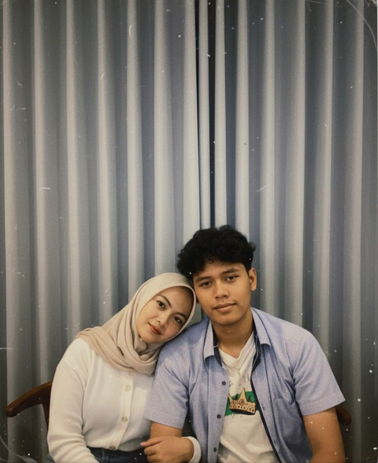
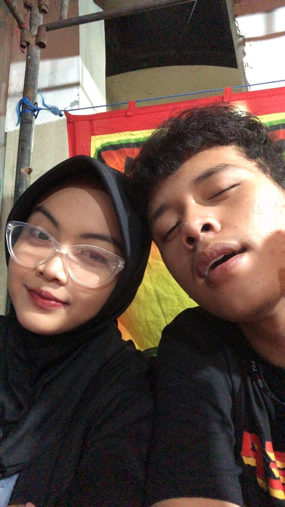
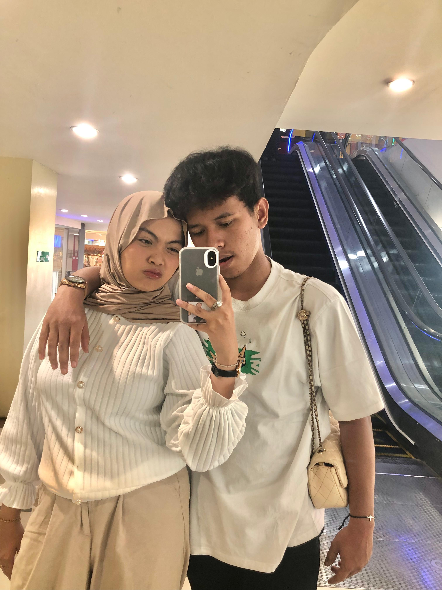
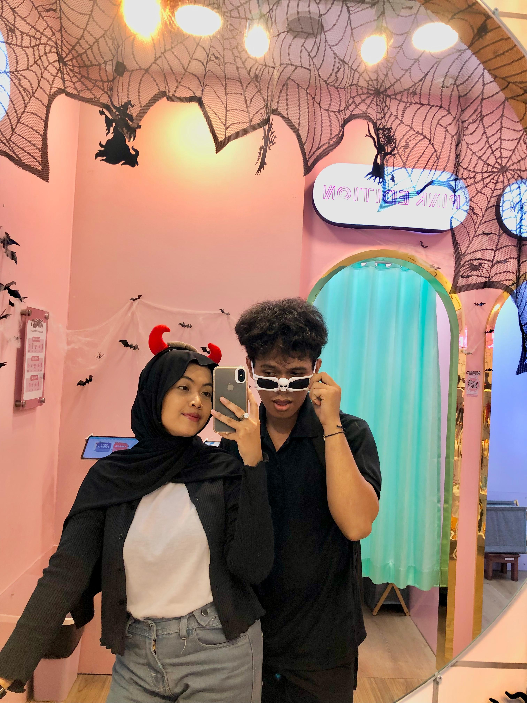
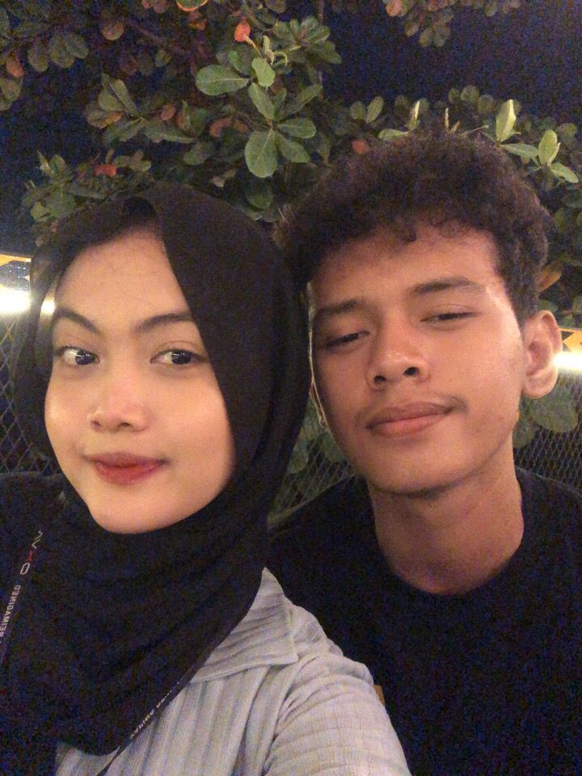

Dari sekian banyak tanggal, 22 Februari 2005 jadi tanggal paling spesial karena lahirnya perempuan yang kelak bikin hidup aku penuh warna. Sekarang kamu 21, bukan cuma bertambah angka, tapi makin dewasa, makin cantik, dan makin kuat.
Aku nggak pandai bikin puisi, tapi aku ingin kamu selalu ingat: Aku sayang banget kamu.
Terima kasih udah lahir, dan terima kasih udah jadi pacarku. Semoga di umur 21 ini semua impian kamu tercapai, rezekinya lancar, dan kita selalu bersama dalam setiap versi bahagia.
💘 Faris Oktanibras

2023

2024
2024

2023

2025

∞
Doa aku: semoga setiap langkahmu selalu dalam lindungan Tuhan. Semoga kesehatan selalu menyertaimu, rezekimu dilancarkan, karier dan cita-citamu dimudahkan, dan hatimu selalu dipenuhi ketenangan. Semoga setiap impian yang pernah kamu ceritakan padaku satu per satu menjadi nyata. Dan ketika dunia terasa berat, semoga kamu selalu diberi kekuatan untuk berdiri lebih tegak dari sebelumnya.
Aku juga punya doa yang sedikit egois…
Semoga aku masih menjadi bagian dari setiap rencanamu.
Semoga aku masih menjadi nama yang kamu sebut dalam doamu.
Semoga aku tetap menjadi orang yang kamu pilih, bukan hanya saat semuanya mudah, tapi juga saat semuanya terasa sulit.
🌹🌹🌹🌹🌹
SAYANG, AKU BERJANJI
AKAN SELALU DI SISIMU
DALAM SUKA DAN DUKA.
HAPPY 21ST, MY LOVE!
🌹🌹🌹🌹🌹
❤️ FARIS ❤️